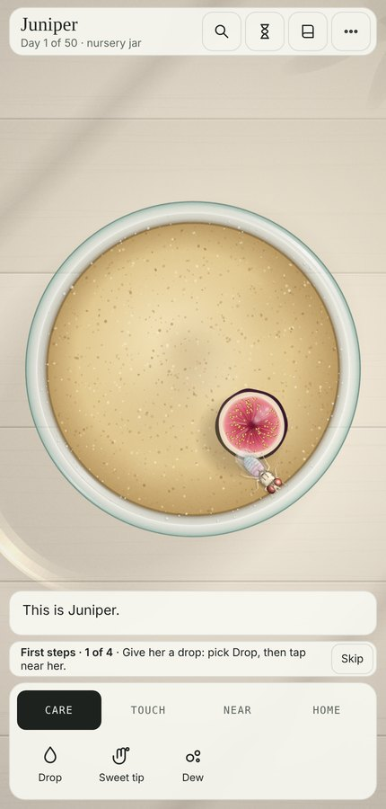
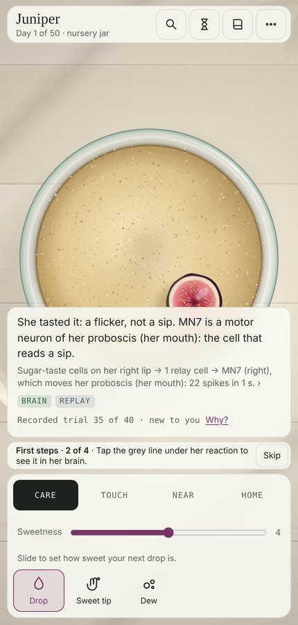
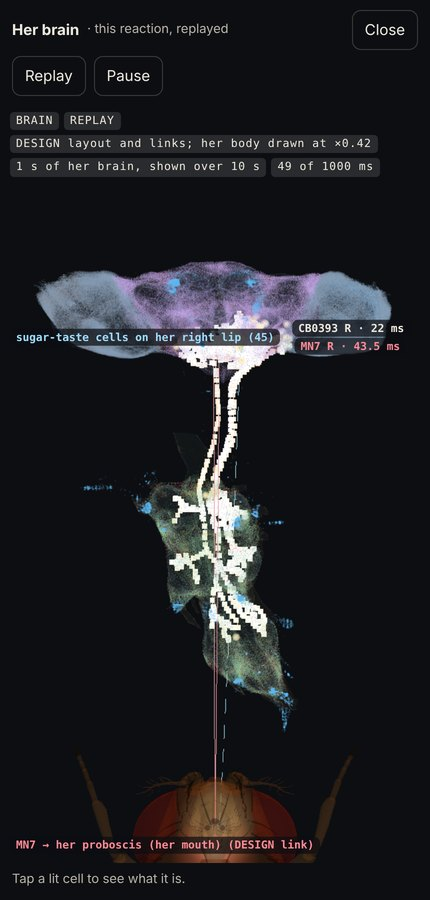
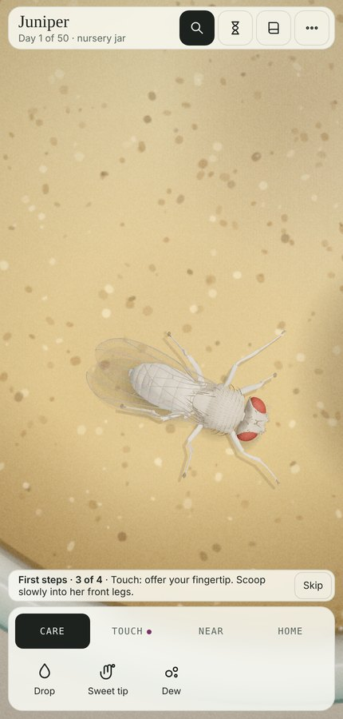

Connectome simulation
Perch
A pet fruit fly driven by a model of a real fly's brain. Every reaction replays a recorded trial of a spiking model run on the mapped wiring of one real fly, and any reaction can be opened to watch it travel through her brain.
The live app, designed for a phone. Open it full screen
169,078neurons
3,542recorded trials
3sister flies
23situations
How it works
- Real wiring. The brain and nerve cord of one adult female fruit fly, mapped cell by cell by electron microscopy (BANC v888).
- A spiking model. A leaky integrate-and-fire network after Shiu et al. 2024 runs on that wiring at 0.1 ms steps, offline in Python with a Numba kernel.
- Three sisters. One fly has the real wiring exactly; two daughters have synapse counts re-rolled at birth, so the same drop can make them act differently.
- Recorded trials. 3,542 runs across 23 situations: drops at seven sweetness levels, dew, touches, rain, a spider's approach and more. Each is stored with its spike counts and timings.
- Replay in the app. When you act, the app deals a stored trial. Opening a reaction draws its path, cell by cell, through her brain in 3D with three.js.
Every on-screen claim is tagged BRAIN (model output on real wiring), REPLAY (a stored trial, re-run) or DESIGN (a choice made for the app). Nothing in the app is a BANC measurement.
Inside Perch
Captured from the live app.




Built on public science
Perch is a non-commercial portfolio prototype. The data and models below stay under their own licences; please keep these credits wherever it is shared.
- BANC connectome (her wiring): Bates, Phelps, Kim, Yang et al. 2026, Nature, doi:10.1038/s41586-026-10735-w. Data: Harvard Dataverse doi:10.7910/DVN/7WTH1N, CC BY 4.0. Cell-type names come from annotations made on FlyWire and are for non-commercial use. Notice
- Brain model: after Shiu et al. 2024, a Drosophila computational brain model, Nature.
- flybody (her 3D body): Vaxenburg et al. 2025, Nature 643:1312-1320; TuragaLab/flybody, Apache-2.0.
- FlyGym / NeuroMechFly (her walk): Wang-Chen et al. 2024, Nat Methods; NeLy-EPFL/flygym, Apache-2.0. Changes and licence text: notice, Apache-2.0.